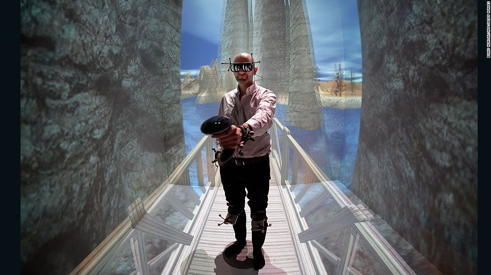
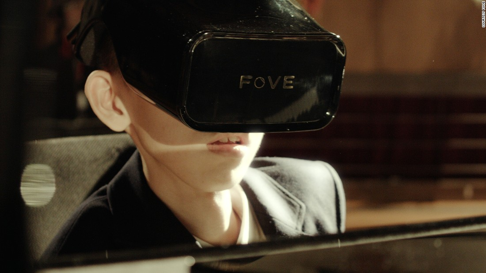

VR headsets are all about escapism—until your real-world nausea kicks in. These tips can help.
VR is more accessible than ever, thanks to affordable, stand-alone headsets like the Oclulus Quest lowering the barrier to entry. And from addictive games like Beat Saber to immersive story-driven games like Half-Life: Alyx, there's plenty to keep you busy in your virtual world.
Unfortunately, VR still comes with a few downsides, with one of the most notable being motion sickness. Even if you aren't the kind of person who gets motion sick on a boat or airplane, some VR games may make you feel dizzy or nauseous, ruining what should be a fun experience.
Experts think motion sickness is primarily caused by a mismatch between cues sent to your brain. If your eyes see one thing and your inner ear is experiencing another, you might experience nausea, explains Adrian Priesol, an otoneurologist in the Division of Vestibular Disorders at Mass Eye and Ear. "Sitting in the back seat of a moving vehicle maximizes this sensory mismatch and can make symptoms worse," he explains. "In the case of VR, the sensory mismatch is the converse: Visual stimulation is sending a signal to the brain that the person is in motion, while balance organ signals indicate the person is not."
You may be more likely to experience this in certain virtual-reality games than others, depending on how the experience requires you to move. Almar Suarez is the R&D manager at Tapptic, a European digital agency focusing on innovative mobile apps, VR, AR, and other connected experiences. In some of their experiments with VR, they found that motion sickness was especially common in environments most of us aren't used to—think zero-gravity games (like ADRIFT) or vertigo-inducing scenarios (like The Climb). It can also happen if your frame rate is too low, which may be a problem on less powerful PCs.
From my own experience—I've owned and reviewed a number of VR headsets as a tech writer—games that require control sticks to move get me feeling nauseous. If I move with my body alone, like in Space Pirate Trainer or Superhot VR, I'm perfectly fine—but throw me into Skyrim VR and I feel like I need to lie down after a few minutes.
You can, however, mitigate some of these symptoms. First, says Suarez, make sure your lenses are clean and that your IPD (interpupillary distance) is set properly on the headset, if it offers IPD adjustment. If you wear glasses, you can often find this value, in millimeters, on your prescription. If you don't, you may just have to adjust it while in-game to find the right setting.
Speaking of glasses, if you can't wear contacts, try to accommodate your glasses in the headset by adjusting the strap or using a glasses spacer on a headset that offers them (they may be sold separately). Oh, and make sure the headset is comfortable and that your PC—if you're using one—is capable of running the games at a high enough frame rate. Sixty frames per second is good, but the higher you can go, the better. Most of the big-name headsets can display 90 frames per second or higher.
Once you have the basics out of the way, you can start digging into your games' settings. "The best way to avoid sickness is to use the control schemes that work better for each particular type of experience," explains Suarez. "In general, standard video game [thumb stick] controls are the worst of them all, especially when trying to turn your view. It’s more natural to just turn your head." Try to turn your body instead of using the thumb stick whenever possible, and if your game offers an option to switch to teleportation mode—where you point to where you want to move and appear there instantly—it can reduce motion sickness quite a bit, even if it's a bit less immersive.
Some games also offer a "field of view" adjustment that can help as well. In Population: ONE, for example, you can adjust a setting that blacks out the edges of the screen to create a vignette effect as you move. This almost completely eliminated my motion sickness in the game—moving with the thumb stick in full-view mode was nausea-inducing, but by blacking out most of my peripheral vision, I was able to move with the thumb sticks much more pleasantly.
Suarez also says that keeping a haptic link to your real-world environment may help. "Some people do this by having a clearly distinctive “playing area” on the floor—for example, a thick rug—which will make it very easy to feel with your feet if you are standing in the right place or not." While headsets usually include a virtual "guardian," the more real-world feel of the rug might keep you from feeling too detached from the real world. "Others seem to feel better when having a direct stream of air towards them," he says, so try putting a fan in front of you and see if that helps.
Finally, start slowly and don't force yourself if you start to feel sick. While Priesol notes that repeated exposure may lessen the effects over time, taking breaks is key. Suarez recommends listening to your body and acting accordingly: "Start slowly and move to more demanding experiences only after you feel comfortable with the simpler ones." Not only will you have more fun, but you'll be less likely to avoid VR entirely if you give yourself time to acclimate to easy, nausea-free experiences.
Hopefully, VR developers will continue to provide as many options to accommodate people prone to motion sickness. Suarez says games that correctly frame the experience and give virtual "anchors"—like a mask overlay for firefighter simulations, or a cockpit around vehicle simulators—can trick your brain more convincingly and making the game world feel real.
The very real health dangers of virtual reality
Sandee LaMotte
Clear the playing field
A quick glance at the safety warnings for the major manufacturers in this space makes it clear: Playing VR without supervision and in a crowded space is risky business.
“While wearing the product’s headset you are blind to the world around you,” says the safety information page for HTC’s Vive. “Do not rely on the product’s chaperone system for protection.”
“I see more falling than anything else,” said Marientina Gotsis, an associate professor of research at the Interactive Media and Games Division of the University of Southern California. “You can trip and hit your head or break a limb and get seriously hurt, so someone needs to watch over you when you are using VR. That’s mandatory.”
That includes keeping pets, small children and other obstacles – like ceiling fans – out of the area. Facebook’s Oculus Rift includes an infographic with the product and has an online safety center with video explanations to illustrate the safety issues.
Keep an eye on it
One of the major health concerns about virtual reality involves the eye.
“There are a variety of potential issues,” said University of California, Berkeley optometry Professor Martin Banks, who studies visual perception in virtual environments. “One is how we affect the growth of the eye, which can lead to myopia or nearsightedness.”
Myopia is a growing problem around the world. In the United States, studies show, nearsightedness rose from only 25% of the population in the 1970s to over 40% by 2000. About 10 million American adults are considered “severely nearsighted.”
“Looking at tablets, phones and the like, there’s pretty good evidence that doing near work can cause lengthening of the eye and increase risk for myopia,” Banks said. “We’re all worried that virtual reality might make things worse.”
Add ‘motion sickness’
A good many people who use virtual reality complain of eye strain, headaches and, in some cases, nausea. Experts say that’s due to the way VR affects the eye-brain connection.
In real life, our eyes naturally converge and focus on a point in space, and our brain is so used to this that it’s coupled the two responses together. Virtual reality separates those, confusing the brain.

“In a virtual environment, the way we look and interact is changed because we may be projecting onto the eyes something that looks far away, but in reality, it’s only a few centimeters from the eye,” said Walter Greenleaf, a behavioral neuroscientist who has studied VR in medical settings for over 30 years.
Science calls that the “vergence-accommodation conflict” and isn’t quite sure how serious it might be. “We’re tricking the brain,” said Greenleaf, who works with Stanford University’s Virtual Human Interaction Lab, “and we don’t know the long-term effect of this.”
Most of us look at cell phones and tablets for a short time before looking up, which minimizes their negative effect on the eye. But with VR, it’s all too easy to become immersed in that out-of-body experience.
How long is too long to use virtual reality in one sitting? Manufacturers like Oculus suggest a “10 to 15 minute break every 30 minutes, even if you don’t think you need it.” But Gotsis says that’s not based on much science.

“Most of what is on the market right now has little research behind it,” she says. “Cumulative exposure without us really knowing what is going on is an issue.”
Gotsis says the quality of the virtual reality game also plays a role in how we react.
“A lot of content is not well-made, with a lot of flickering things and objects that come at you too fast or too close, and that can produce eye strain,” she said She insists that any eyestrain be considered a signal to cease playing.
“Damage from eye strain can sometimes be very sudden, so if something is uncomfortable, just stop, take it off and stop looking at it,” Gotsis warned. “Don’t feel trapped and mesmerized in the content. Just stop.”
Pre-existing conditions
It’s not just the eyes that might be harmed. “Listening to sound at high volumes can cause irreparable damage to your hearing,” states Oculus Rift.
“Over time, increasingly loud audio may start to sound normal but can actually be damaging your hearing,” Sony’s PlayStation adds, suggesting that a user lower the volume if they can’t hear people speaking around them while they’re playing.
Most devices also include a warning to see a doctor before use if you are “pregnant, elderly, or have pre-existing conditions that may affect your virtual reality experience such as vision abnormalities, psychiatric disorders, heart conditions, or other serious medical conditions.”
That warning includes implanted medical devices, such as cardiac pacemakers, hearing aids and defibrillators, as well as anyone with epilepsy or a history of seizures and blackouts. But manufacturers say some people can seize even without a history of blackouts, especially those younger than 20, so manufacturers suggest keeping an eye out for involuntary muscle twitches and loss of balance as a signal of a potential problem.
Daydream also suggests avoiding play entirely if you’re “intoxicated, overly tired, or are suffering from a cold, headache, upset stomach, or other sickness” because the experience of virtual reality might make you feel worse.
And if that’s not enough, Daydream View warns that sharing the device could spread contagious diseases and infections and even cause skin irritation.
Children at most risk
Gotsis believes that families with younger children should be especially cautious with virtual reality, even if they purchased the game for teens or young adults.
“It’s almost impossible to hold up something shiny in front of a young child and then say ‘no, you can’t have this,’ ” she said. “So parents have to tell the older child that part of your responsibility is to take care of their younger siblings, to help them understand they shouldn’t use it.”
If they do try it, Gotsis adds, the younger the child, the shorter the exposure should be.
“Children may not know how to communicate discomfort of any sort, such as visual discomfort or motion sickness, so you don’t want prolonged exposure on screen,” she said.
Jeremy Bailenson, director of Stanford’s Virtual Human Interaction Lab, uses VR himself and on subjects in his lab daily. Yet he has let his 6-year-old daughter use it only four times in her life, each time for a duration of only five minutes.
“We read a lot of new studies in our work,” he said, “but what we are seeing is a ton of studies on medical applications and not many with young kids, and not really any with really young kids.”
Berkeley’s Banks agrees. “The research has been done primarily in young adults … so we don’t really know what is going to happen to a young child.”